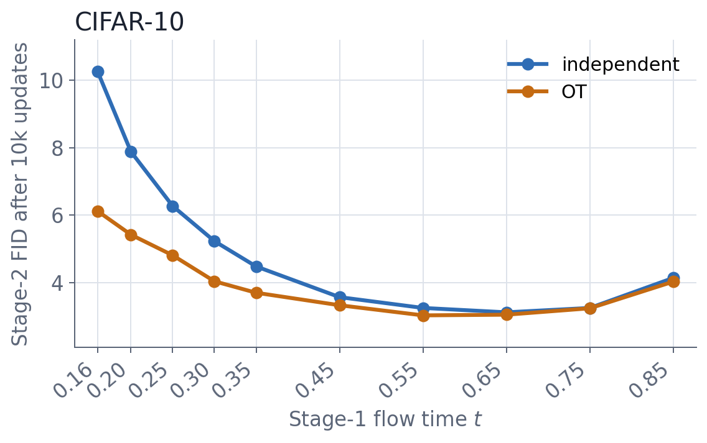
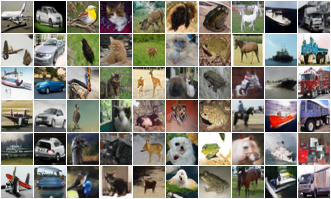
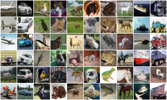
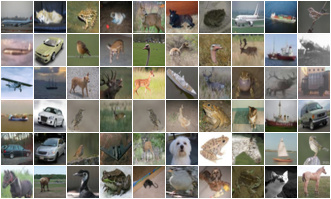

Among the recent papers on few-step generation, Priming Models clearly stands out: at first sight, it does not sound like a good idea at all, but then it works way too well.
In their most basic setup, they first train a denoiser at one fixed interpolation time ('Stage 1'), then turn it into a one-step generator with (a much more expensive) distributional post-training ('Stage 2'). Notably, this Stage-2 training is conceptually not very far from very early-stage approaches to generative modeling, but gives surprisingly good results for image generation. So, I played around with it and burned some compute on experiments to see whether (i) it could help me understand the method and (ii) I could improve it somehow using lessons from flow matching.
A quick recap of priming models
Let \(X\sim p_X\) be Gaussian noise and \(Y\sim p_Y\) a data point, i.e., an image. A coupling \(\pi\in\Pi(p_X,p_Y)\) specifies how noise samples \(X\) and data samples \(Y\) are paired. Drawing \((X,Y)\sim\pi\), define
\[Z_t=(1-t)X+tY, \qquad t\in[0,1].\]
Thus, \(t=0\) is pure noise and \(t=1\) is pure data. The paper instead writes the noise level as \(s\), but we can recover everything via the time reversal \(s=1-t\). However, let us use \(t\) for now.
In Stage 1, the network \(D_\theta\) predicts the clean data image \(Y\) from \(Z_t\) at one fixed time \(t\) via the loss:
\[\mathcal L_1(\theta;\pi,t)=\mathbb E_{(X,Y)\sim\pi}\left[\lVert D_\theta(Z_t)-Y\rVert^2\right].\]
The paper implicitly uses the independent coupling \(\pi_{\mathrm{ind}}=p_X\otimes p_Y\). Writing the loss in terms of \(\pi\) allows us to replace this independent coupling with minibatch couplings, such as the (class-conditional) optimal transport (OT) coupling \(\pi_{\mathrm{OT}}\).
In Stage 2, the same network is post-trained as a one-step generator. The paper measures a featurewise OT discrepancy over several pretrained and frozen feature extractors \(\phi_k\) and mixes two entropic regularization strengths. With \(\widehat Y=D_\theta(X)\) and \(\widehat Y'=D_\theta(X')\), the loss is
\[\mathcal L_2(\theta)=\sum_{k=1}^K\sum_\varepsilon w_{k,\varepsilon}\left[\operatorname{OT}_\varepsilon\!\left(\phi_k(\widehat Y),\phi_k(Y)\right)-\operatorname{OT}_\varepsilon\!\left(\phi_k(\widehat Y),\operatorname{sg}\phi_k(\widehat Y')\right)\right].\]
Here, \(\operatorname{OT}_\varepsilon\) is entropic OT and \(\operatorname{sg}\) stops the gradient. For my experiments, I kept the original ConvNeXt-V2-B features (at \(112\times112\) resolution) and replaced the ResNet-MAE features with features from ResNet-18 classifiers. I trained a separate classifier on each of MNIST, Fashion-MNIST, and CIFAR-10, mainly to obtain dataset-specific features.
Stage 1 is flow matching at a fixed time
If we parametrize the velocity in flow matching as
\[v_\theta(Z_t)=\frac{D_\theta(Z_t)-Z_t}{1-t},\]
our flow-matching loss becomes
\[\left\lVert v_\theta(Z_t)-(Y-X)\right\rVert^2 =\frac{\left\lVert D_\theta(Z_t)-Y\right\rVert^2}{(1-t)^2}.\]
So Stage 1 is just \(x\)-prediction flow matching at one fixed time \(t\), up to a constant. Importantly, however, the paper demonstrated that the specific choice of \(t\) matters a lot, but there seems to be no clear diagnostic to pick the optimal time a priori. This led to the question:
Can replacing \(\pi_{\mathrm{ind}}\) with \(\pi_{\mathrm{OT}}\) improve the final result and make it less sensitive to \(t\)?
I ran all experiments class-conditionally on \(32\times32\) images. For Stage 1, I used the same 36M-parameter U-Net and a training batch size of 128 throughout. Both couplings paired noise and data within each class: the independent arm used random within-class pairs, while OT solved an exact minimum-MSE matching within class-specific pools (2,500 for CIFAR-10 and 3,000 for MNIST and Fashion-MNIST). I reported Stage-2 FID-50k against the training set, using EMA weights and one network call per sample. All runs used one seed.
Experiment 1: the fixed-time denoiser at different times
I first kept the paper's Stage-1 setup: I trained the denoiser for 100k updates at one fixed time \(t\), then ran Stage 2 for 10k updates. The blue curve uses the paper's independent pairing of \(X\) and \(Y\). The orange curve shows the same setup, but with the independent pairing replaced by minibatch OT.

As in the original paper, the specific time \(t\) matters a lot, but its optimal value differs substantially from the one reported for ImageNet. The optimal CIFAR-10 time seems to be \(t^*\approx 0.6\) for both couplings. In contrast, the paper found \(t^* \approx 0.2\) for ImageNet (\(s^* \approx 0.8\)). Similar but less systematic runs on MNIST and Fashion-MNIST also pointed very roughly to \(t^*\approx 0.6\). My best guess is that the optimal time/noise level for imaging mostly depends on the image resolution, as it influences the signal-to-noise ratio.
On CIFAR-10, OT is at least as good at all ten matched times and flattens the curve considerably. In this sweep, OT helps and reduces the dependence on the chosen time. However, the OT advantage at the separately optimized times is narrow (OT FID 3.03 at \(t^*=0.55\), independent FID 3.12 at \(t^*=0.65\)).
Experiment 2: start from a full flow-matching network
Since Stage 1 is flow matching at some fixed time, the next step was to start from a flow-matching network trained across all times. So, I trained the same U-Net with a time input and velocity loss, doubled the network updates to 200k, froze it at \(t=0.6\), and ran the same Stage 2. I chose \(t=0.6\) from the CIFAR-10 sweep and did not tune it per dataset.
Stage-2 FID after 10k updates:
| Dataset | Independent init | OT init | Test vs. train* |
|---|---|---|---|
| MNIST | 1.16 | 0.99 | 1.02 |
| Fashion-MNIST | 1.67 | 1.45 | 1.42 |
| CIFAR-10 | 2.87 | 2.65 | 3.15 |
* Uses only 10k test images and is upward-biased relative to FID-50k.
OT is slightly better in every row. Continuing the two CIFAR-10 runs to 25k Stage-2 updates resulted in FIDs of 2.36 with independent pairing and 2.21 with OT.
With the same input noise and class, the independent and OT models produce very similar images. The grids below show both models, followed by the nearest training images for OT. Both approaches seem to generalize and give similar results despite their different initializations.



Conclusion
I find Priming Models very interesting, but the framework opens a new question: how do we find the right noise level for Stage 1? Notably, I could not find a useful Stage-1 diagnostic to predict the final Stage-2 performance. In particular, the convergence rate seems to depend on the starting time \(t\) as well, so even a shortened Stage-2 run cannot give a final answer.
My current default would be an OT flow-matching network. OT is consistently a little better, makes the result less dependent on the chosen time, and Stage 2 is expensive enough that starting from the better network matters. Access to a flow-matching network trained across all times also makes it faster to run a couple of Stage-2 runs.
However, I doubt this is the final answer. There are probably better ways to construct or select Stage 1. Looking forward to someone finding them! :)